나만의 패션쇼! 옷장 만들기와 관절 인형 꾸미기 👗✨
안녕하세요, 생각공작소입니다. :)
3월이 되면서 봄의 기운이 완연해지고,
아이들의 옷장에도 변화가 찾아옵니다.
"오늘은 뭐 입을까?" "이 옷이 좋아!"
매일 아침 옷을 고르는 일은
아이들에게 특별한 즐거움이랍니다. 👗✨
그래서 이번 3월은, 생각공작소 아이들과 함께
나만의 옷장 만들기 활동을 진행했습니다!
직접 나를 그리고, 관절 인형으로 만들고,
다양한 옷을 디자인해서
나만의 옷장에 걸어보는 시간!
아이들의 창의력과 상상력이
마음껏 펼쳐진 특별한 활동이었답니다. 🎨👔
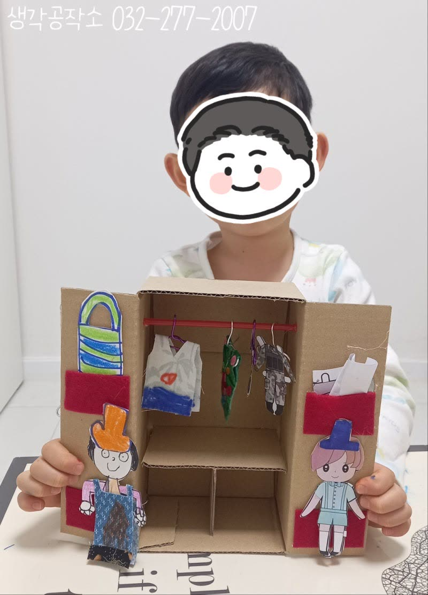
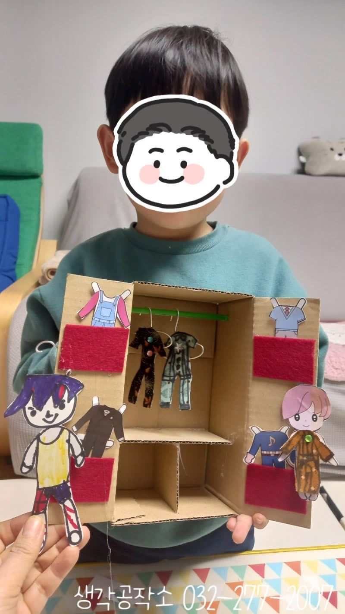
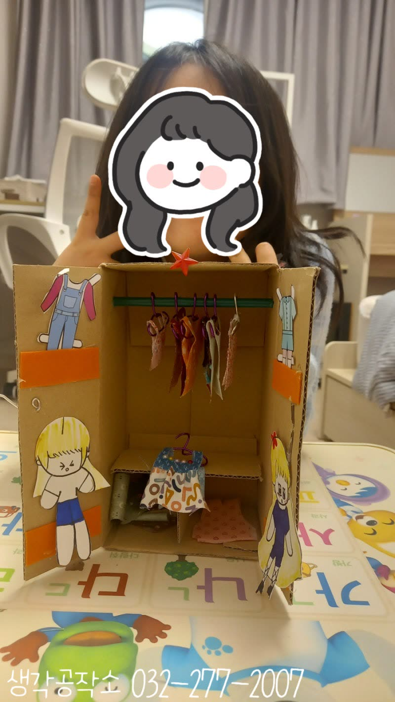
먼저 도화지에 나를 그리기 시작했어요.
"선생님, 저는 머리를 이렇게 그릴래요!"
"저는 웃는 얼굴로 그릴 거예요!"
아이들은 자신의 얼굴과 몸을 그려나갔습니다.
그리고 몸통, 팔, 다리를 따로따로 그렸어요.
"왜 따로 그려요?"
"이따가 움직이는 인형을 만들 거니까!"
아이들의 눈이 반짝였답니다. ✨
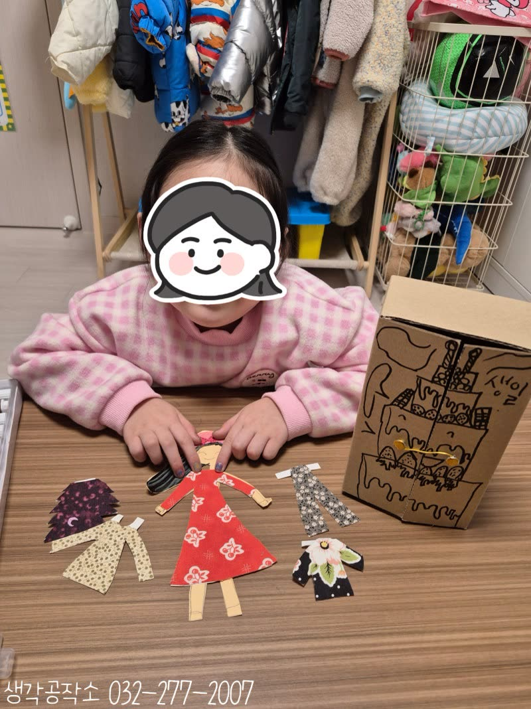
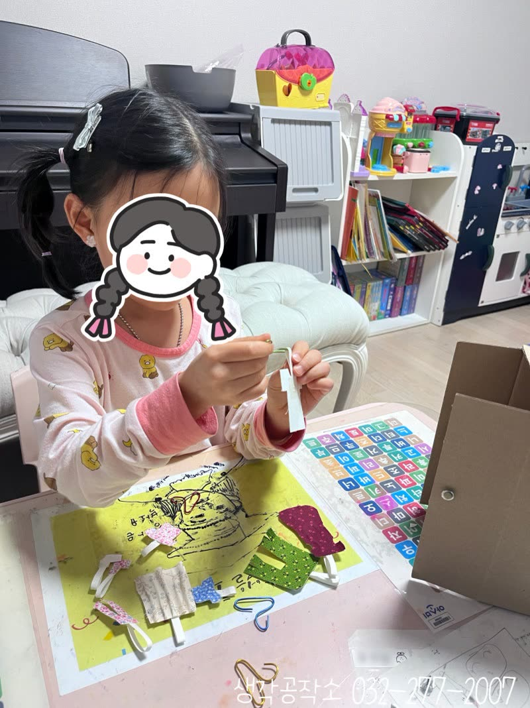
이제 할핀을 이용해
관절 인형으로 만들 차례!
선생님이 몸통과 팔, 다리를
할핀으로 연결해주자
"우와, 팔이 움직여요!"
다리도 구부려져요!"
직접 인형의 팔다리를 이리저리
움직여보며 신기해하는 아이들이에요 🎭
"이제 진짜 인형 같아요!"
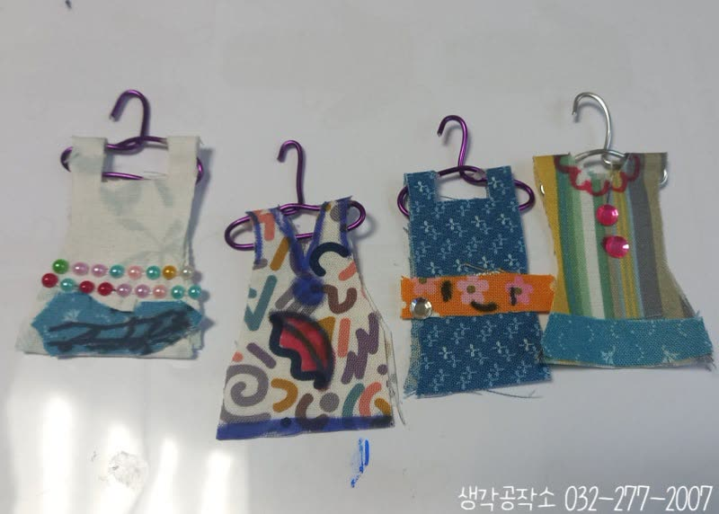
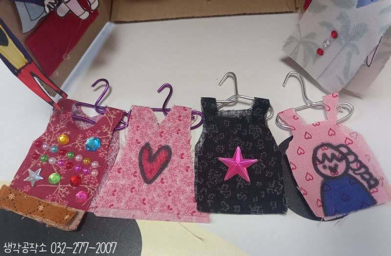
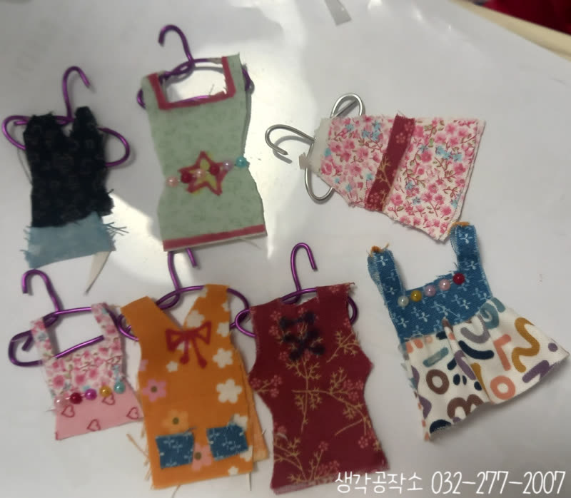
다양한 옷을 디자인하기 시작해요! 👗👔
아이들은 조각 천을 보며
상상력을 마음껏 펼쳤어요.
"저는 빨간 원피스 만들 거예요!"
"저는 바지랑 티셔츠!" "저는 꽃무늬 옷!"
조각 천을 오리고, 도화지에 그린 몸에 맞춰
옷 모양을 만들어갔습니다. ✂️
꽃무늬, 물방울무늬, 별무늬까지!
다양한 패턴의 천으로
세상에 하나뿐인 옷을 디자인했답니다.
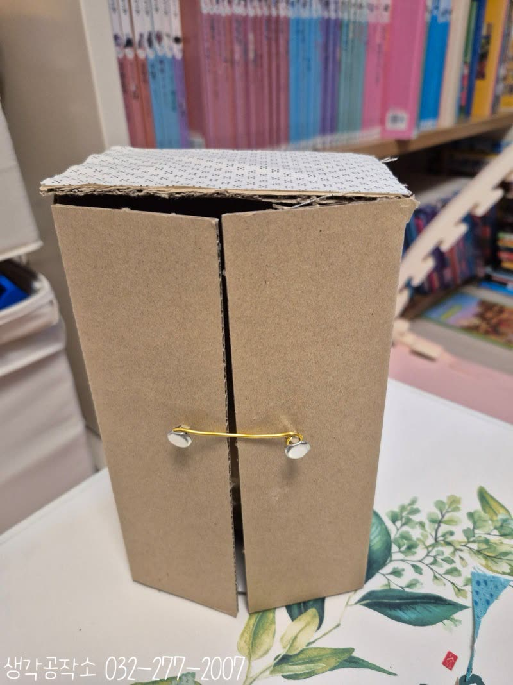
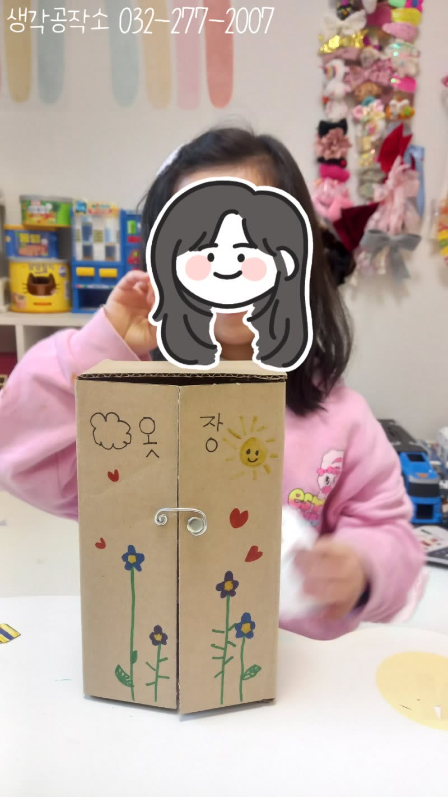
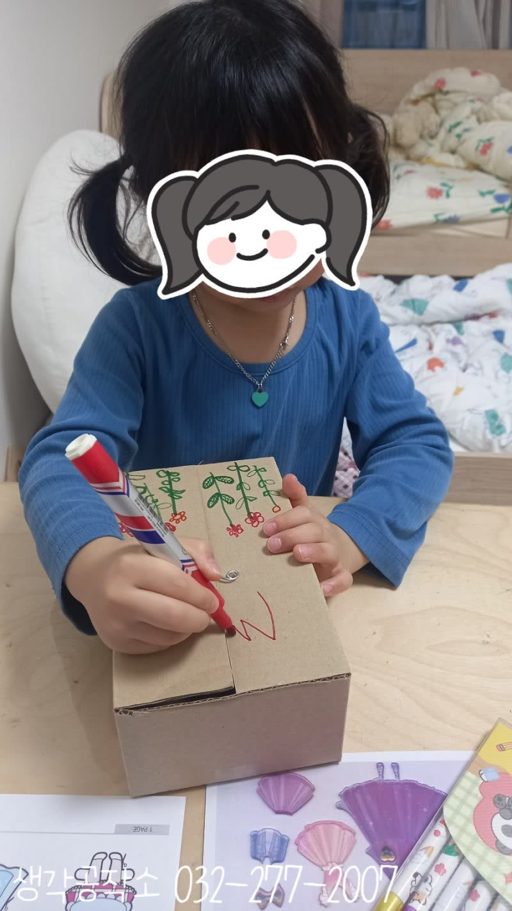
아이들이 옷을 만드는 동안
선생님은 옷장을 만들어주었어요!
상자를 이용해 두 칸짜리 옷장을 만들고,
빨대와 와이어 줄로 옷걸이를 설치했답니다.👕
"우와, 진짜 옷장이다!"
"여기 옷을 걸 수 있어요?"
완성된 옷을 옷걸이에 하나씩 걸며
뿌듯한 표정을 짓는 아이들! 👗
옷장 겉면에는 좋아하는 그림도 그리고,
스티커와 장식으로 나만의 옷장을 꾸몄답니다.
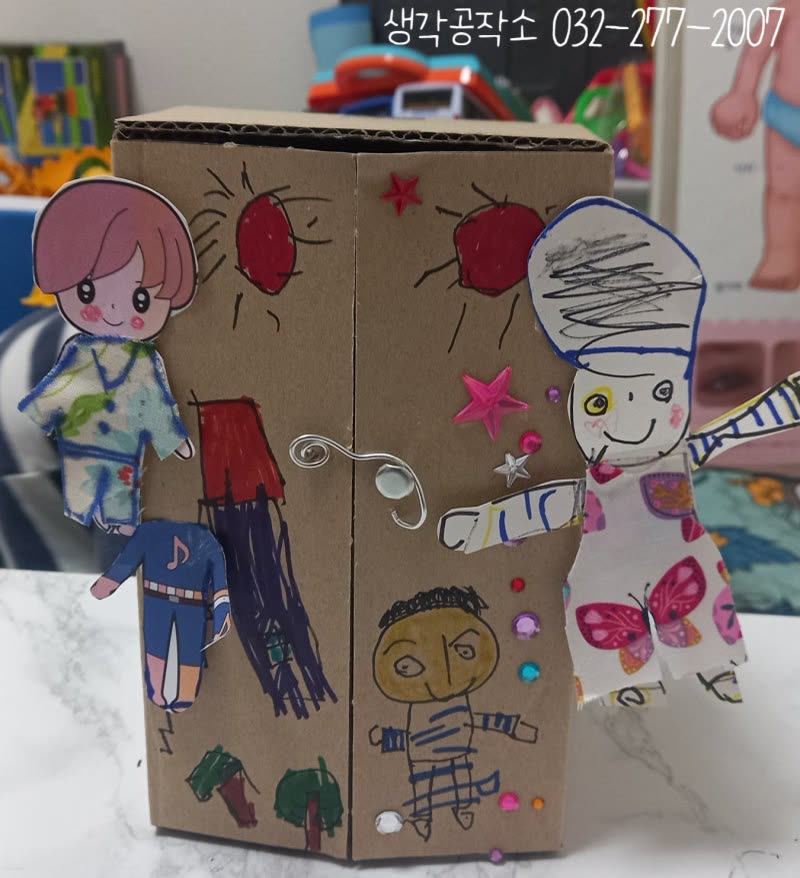
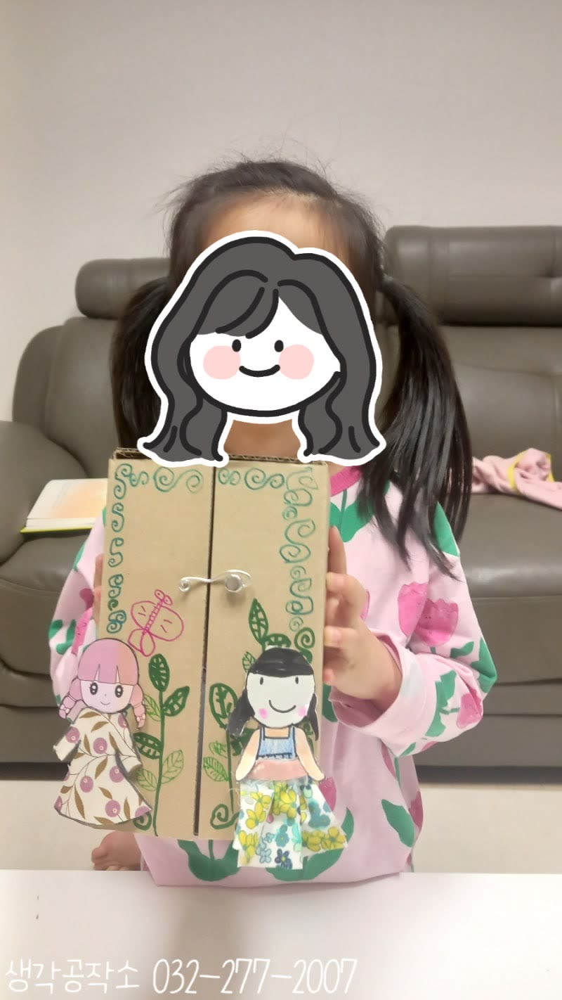
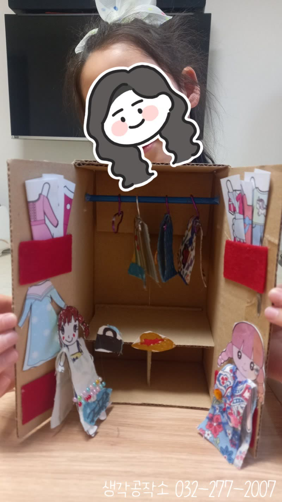
"선생님, 다 만들었어요!"
관절 인형을 손에 들고,
옷장 속 옷을 하나씩 입혀보며
즐거워하는 아이들! 😊
"이 옷 입으면 예쁠 것 같아요!"
"이건 겨울 옷, 이건 여름 옷!"
직접 디자인한 옷을 인형에게 입혀보며
상상 속 패션쇼가 시작되었답니다. 👔✨
"저는 디자이너가 된 것 같아요!"
이번 나만의 옷장 만들기는
단순히 만들기를 넘어
자신을 표현하고,
창의적으로 디자인하고,
소근육을 정교하게 사용하고,
공간 구성력을 키우고,
역할놀이를 통해 상상력을 확장하는
모든 순간이 아이들의 성장이었답니다. 🎨
오감 쑥쑥! 생각 쑥쑥!
📞 생각공작소 032-277-2007